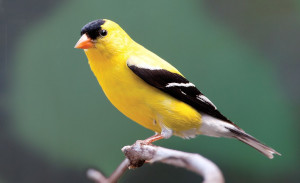
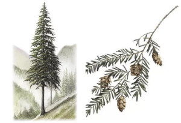

| List Of State Symbols | ||
|---|---|---|
| State Bird | American Goldfinch | 
Photo Credit by: Diann MacRae |
| State Tree | Western Hemlock | 
Photo Credit by: WOOD Magazine Staff |
| State Fruit | Apple | 
Photo Credit by: PlantingTree.com |
| Unofficial: The Evergreen State | ||
About Washington State
Nestled in the corner of the map of the United States, is a state filled with immense history. Old and somewhat new. The culture has influenced so many inspiring topics across the globe with what has started here.
Here are some interesting influences across a wide range of interests:
- Direct access to the Pacific Ocean:
- Geoducks are only found on the west coast and are primarily harvested in Washington State.
- Pods of Orcas spend a lot of time in the waters around the peninsula and around the San Juan Islands.
- The Giant Pacific Octopus frequents the waters around the coast. The largest breed of octopi on the planet.
- Legend has it: the largest octopus ever found, was under the Tacoma Narrows bridge. Off the coast of Washington state. Foster, L.(2015)
- Music Scene:
- Foo Fighters
- Nirvana
- Jimi Hendrix
- Alice In Chains
- Macklemore
- Heart
- Sir Mix-a-lot
- And many more wonderful bands and artists...
- Wasthington State has a strong influence in agriculture. Primarily in Eastern Washington:
- Walla Walla onions
- Rainier Cherries
- Hops
- 71% of hops grown in the United States, are from the Yakima Valley in Eastern Washington. Evans, Z.(2023)
Sources
- Lauren Foster, Giant Octopus Revealed, (Sept. 25th, 2015) https://www.southsoundmag.com/arts-entertainment/giant-octopus-revealed/article_f40fe8c5-7b71-5b39-b9c8-27fa192d0dd1.html"
- "Zane Evans, What’s brewing? FAS Recognizes 90 Years of U.S. Hops Industry, Gone Global (Sept. 1, 2023), https://www.usda.gov/media/blog/2023/09/01/whats-brewing-fas-recognizes-90-years-us-hops-industry-gone-global#:~:text=Growers%20are%20hard%20at%20work,98%20percent%20of%20America's%20hops."
{kind=link}